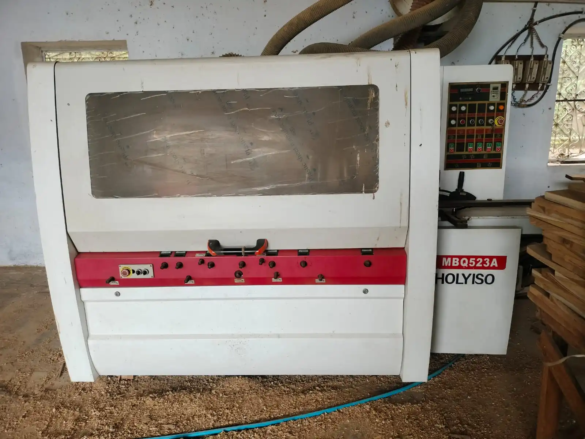
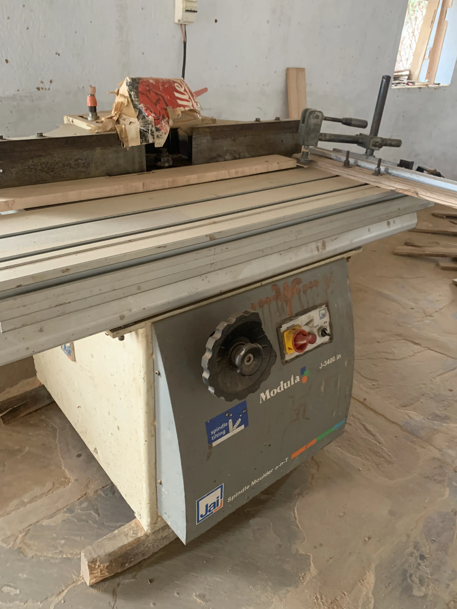

Core Manufactured Flooring
Teak flooring and Maple flooring — including Canadian Hard Maple as the premium flagship.
Delivering Quality · Honouring Commitment
Savitri Timbers manufactures Teak and Maple flooring in India, with Canadian Hard Maple as the flagship offering. This page covers finished flooring — not the broader timber sourcing portfolio on Products.
Flooring at Savitri Timbers is a manufactured product line. Raw hardwood boards are processed through our manufacturing operation into finished flooring profiles for project supply.
Teak flooring and Maple flooring — including Canadian Hard Maple as the premium flagship.
Pine is used as base and supporting material within the flooring system, and may be produced on demand.
Broader timber species listed on Products are supply/sourcing capability. They are not automatically finished flooring products.
Start by application or by wood. Indoor Sports is the published application path. Maple and Teak are the manufactured flooring woods.
Sports flooring remains a core part of Savitri Timbers' flooring proposition. Manufactured hardwood flooring — particularly maple, including Canadian Hard Maple — supports indoor sports and institutional flooring requirements through actual manufacturing capability rather than unsupported performance claims.
Hardwood flooring requirements for indoor arenas and sports facilities.
Flooring supply for schools, colleges and institutional indoor spaces.
Finished Teak and Maple flooring for project partners and flooring programmes.
Packaging and printing support may apply where relevant. Details remain on the Manufacturing page.
Teak and Maple flooring follows a clear material path: incoming boards measured in CFT are processed into finished flooring sold by SQFT.
For the detailed machine sequence, inspection and packaging evidence, see Manufacturing.
Pine is used as the base and supporting material within the flooring system. It is not positioned as equivalent to Teak or Maple within the core finished flooring proposition.
Pine flooring itself may be produced on demand according to project requirement. Finished Pine material is termite treated at the manufacturing site. The treatment may give the finished Pine a characteristic blackish appearance.
No chemical name, concentration, treatment standard, laboratory result, certification or guaranteed protection period is claimed on this page.
These dimensions and commercial units are the approved Sprint 4.2 business specifications. No additional tolerances, performance ratings or alternative standards are implied.
| Material / Product | Incoming (raw) | Finished | Commercial unit |
|---|---|---|---|
| Teak flooring | 3″ / 4″ × 1″, 3 ft+ | 65 / 92 mm × 22 mm | SQFT |
| Maple flooring | 3″ / 4″ × 1″, 3 ft+ | 65 / 92 mm × 22 mm | SQFT |
| Pine flooring base | 75 × 50 mm, 3 ft+ | 70 × 45 mm | RFT |
Teak and Maple finished flooring is measured and sold in square feet (SQFT). Pine used as flooring base/support is measured and sold in running feet (RFT). Incoming Teak/Maple boards are commercially measured in cubic feet (CFT).
Authentic photographs from Savitri Timbers' manufacturing operations. These images support manufacturing capability — they do not prove inventory depth, certifications or species origin claims.




Share your flooring species preference, finished width interest (65 mm or 92 mm), approximate area in SQFT, and project context. For broader timber supply outside manufactured flooring, use Products.
Enquire About Flooring